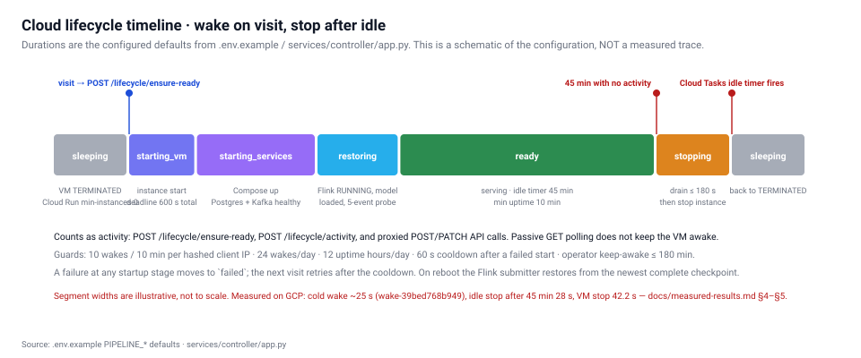
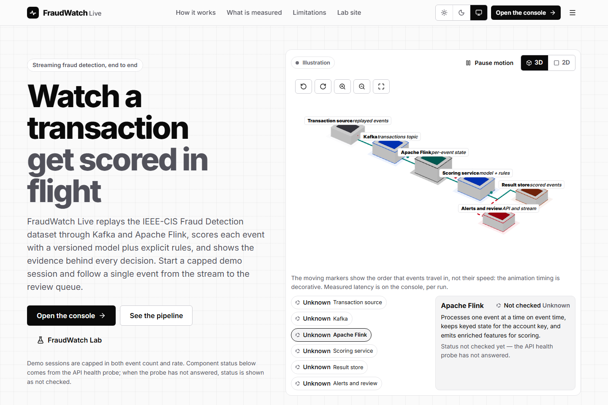
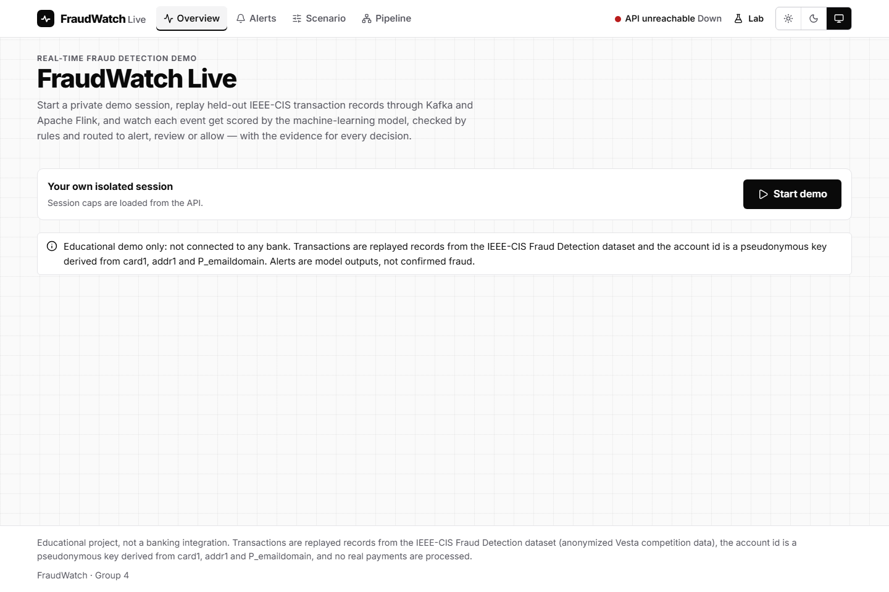

Draft report — 2026-09-18. This draft is written against the project's own evidence files. It is labelled a draft because the final institutional template has not been supplied; when it arrives the content below should be re-fitted to that template rather than rewritten from memory. Every number in this report is traceable to a file in the repository, and each section says plainly where a claim comes from and what was not measured.
| Project title | FraudWatch — Real-Time Fraud Detection using Big Data Analytics and Machine Learning |
| Group | Group 4 |
| Members | Hardik Hinduja · Avinash Gehi · Siddharth Dey · Sahil Deshmukh |
| Submission date | Monday, 21 September 2026 |
| Deployed sites | FraudWatch Live · FraudWatch Lab (§8) |
| Repository | monorepo — apps, services, packages, infra, ml, docs, reports |
| Report status | Draft, evidence-based; see §10 for the open items |
FraudWatch is a working fraud-detection system, not a mockup. Transactions from the IEEE-CIS Fraud Detection dataset are replayed onto Apache Kafka, enriched with per-account streaming features by Apache Flink and Apache Spark Structured Streaming, scored by a LightGBM model behind one shared HTTP scoring service, persisted to PostgreSQL, and streamed to two React websites. The whole backend runs on a single Google Compute Engine VM that wakes when a visitor arrives and stops itself after 45 idle minutes, so the deployment stays inside Google Cloud Free Trial credit. The system has been exercised end to end on GCP: 500 records processed by both engines with bit-identical scores, a measured late event path, a real TaskManager kill with checkpoint recovery, and a full sleep/wake/sleep lifecycle.
Card fraud must be caught while a transaction is still in flight, which makes it a streaming problem rather than a batch problem. Two properties make it hard. First, fraud is rare: in the held-out test split used here only 3.48% of transactions are fraudulent, so accuracy is a meaningless headline and precision/recall trade-offs dominate. Second, the arrival order is not guaranteed: events can arrive late or out of order, and a system that silently drops them reports a cleaner result than it earned. FraudWatch is built to make both of these visible rather than to hide them.
| CA1 | CA2 | |
|---|---|---|
| Focus | Real-time fraud detection | True streaming vs micro-batch |
| Question | Can a model score transactions as they arrive, and how good is it really? | Does the engine choice change the answer, the latency, or both? |
| Implementation | Kafka → Flink → scoring service → PostgreSQL → Live console | The same input fanned out to Flink and Spark, results compared row by row |
| Evidence | ml/artifacts/fw-ieee-stream-1.1.0/evaluation.json, Live site §5 |
Parity/late/recovery runs in docs/measured-results.md, Lab site §6–§7 |
| Site | FraudWatch Live (/console, /alerts, /scenario, /pipeline) |
FraudWatch Lab (/ca1, /ca2, /experiments, /architecture, /system, /evidence) |

The five architecture figures rendered on the Lab site (end-to-end, websites, model-paths,
engine-paths, cloud-lifecycle) are defined in packages/ui/src/viz/ArchitectureFigures.tsx and are
generated from the same source of truth as the running system.
Data path. Generator → Kafka topic fraudwatch.transactions → Flink and/or Spark → shared scoring
service (:8001) → Kafka result topics → result consumer → PostgreSQL → FastAPI /api/v1 → Server-Sent
Events → both React sites.
Every version below was read from the repository's build and compose files, not assumed.
| Layer | Component | Version |
|---|---|---|
| Messaging | Apache Kafka (KRaft, single node) | 4.1.2 |
| True streaming | Apache Flink | 1.20.5 |
| Micro-batch | Apache Spark Structured Streaming | 3.5.9 |
| Runtime (Flink job) | Java | 17 |
| Model | LightGBM | 4.7.0 |
| Storage | PostgreSQL | 17.11 |
| API / services | Python + FastAPI | — |
| Frontend | React | 19.3.0 |
| Frontend | TypeScript | 7.0.2 |
| Frontend build | Vite | 8 |
| 3D | three / @react-three/fiber | 0.186.0 / 9.7.0 |
| Browser tests | Playwright (Chromium) | 1.63.0 |
Versioned contracts. Feature spec fs-1.1 (15 stream-computable features), ruleset rules-1.1,
policy policy-1.0, model artifact fw-ieee-stream-1.1.0. Both engines load the same three, which is
what makes the CA2 comparison a comparison of engines rather than of configurations.
IEEE-CIS Fraud Detection (Kaggle competition ieee-fraud-detection), contributed by Vesta
Corporation. It is used under the competition's terms; the raw CSV files are not committed to the
repository and are not shipped in the frontend bundle or any downloadable archive.
Units. TransactionAmt is reported by the source as a transaction amount in an unspecified
currency unit. This report therefore calls it "transaction amount" and never relabels it as INR or
any other currency. An earlier internal field name amount_inr was retired for exactly this reason.
Only features computable from a stream were used — 15 in total (fs-1.1). A feature that needs the
full dataset, or the future, cannot be computed when the transaction is actually in flight, so
including one would inflate the score and break at runtime. Features combine per-event attributes with
per-account state held in Flink's keyed ValueState (and Spark's GroupState), such as recent
transaction counts and deviation from the account's own recent behaviour.
fw-ieee-stream-1.1.0.pred_contrib=True), contributions in log-odds, not
probabilities.rules-1.1 (deterministic rules) and policy-1.0 (alert / review / allow bands).Thresholds were selected on the validation split and then applied unchanged to the held-out test
split, which was scored once. Alert threshold 0.10477, review threshold 0.06955.
| Metric | LightGBM | Logistic-regression baseline |
|---|---|---|
| PR-AUC | 0.1375 | 0.0961 |
| ROC-AUC | 0.7817 | 0.7603 |
| Precision | 0.1508 | — |
| Recall | 0.3675 | — |
| F1 | 0.2138 | — |
| Accuracy | 0.9059 | — |
| Brier score | 0.0321 | — |
| Expected calibration error | 0.0055 | — |
Confusion matrix: TN 79,116 · FP 6,382 · FN 1,950 · TP 1,133. Prevalence in the test split: 3.48%.
Policy outcome over the test split: alert 7,515 (8.48%), review 3,901 (4.40%), allow 77,165 (87.11%),
combined flagged recall 0.4788. Rule firings: R1_BURST 625, R2_PROFILE_DEVIATION 497,
R3_TEST_THEN_LARGE 0.
Accuracy of 0.9059 looks strong and means almost nothing: always predicting "not fraud" would score about 0.965. The metrics that matter are PR-AUC 0.1375 against a 3.48% base rate, and a precision of 0.1508 at recall 0.3675 — roughly one in seven alerts is genuine fraud, and about two-thirds of fraud at that threshold is missed by the alert band alone. The model beats the logistic-regression baseline on PR-AUC by a clear margin (0.1375 vs 0.0961), which is the honest claim: it is better than the baseline, not that it is production-grade.
R3_TEST_THEN_LARGE fired zero times. That is reported as zero, not omitted. It means either the
pattern is absent from this split or the rule's thresholds are too tight for it; which one has not
been determined.
The model outputs are model scores, not calibrated probabilities, except where calibration is explicitly shown (Brier 0.0321, ECE 0.0055 are reported for the test split only).
FraudWatch Live is the operations console: a landing page with an interactive 3D hero plus /console,
/alerts, /scenario and /pipeline. A visitor starts a bounded preset scenario, watches events
being scored in real time, and opens any alert to see its TreeSHAP contributions and the rules that
fired.
| Route | Purpose | Screenshot |
|---|---|---|
/ |
Landing page, interactive 3D hero | media/screenshots/live-landing.png |
/console |
Live scored-event stream | media/screenshots/live-console.png |
/scenario |
Bounded preset scenario controls | media/screenshots/live-scenario.png |
/alerts |
Alert list and per-alert evidence | media/screenshots/live-alerts.png |
/pipeline |
3D pipeline view | media/screenshots/live-pipeline.png |
/ (mobile) |
Pixel 7 viewport | media/screenshots/live-landing-mobile.png |


What these screenshots do and do not show. They were captured on 2026-09-18 from the deployed Cloud Run origin in a real headless Chromium, so they are a true record of what the deployed sites render. They show the data panels empty or in an error state, because of the CORS defect described in §8: every API call from the deployed sites was blocked at capture time. They are therefore evidence that the sites deploy, route and render — including WebGL — and not evidence of the pipeline serving live data. Screenshots of the console carrying real data should be recaptured once that defect is fixed.
A walkthrough recording of the whole site is at media/video/live-walkthrough.webm, with the raw
per-route log in media/video/tour-log.json.
forBoundedOutOfOrderness(5 s): the pipeline tolerates 5 seconds of out-of-order arrival before it
considers a window closeable.allowedLateness(ZERO).late flag. This is the design decision that
makes §7's late-event measurement possible: a system that dropped these events would simply report a
cleaner result.ValueState holds the rolling features; Spark's equivalent is
GroupState with an explicit watermark check.EXACTLY_ONCE mode, 10-second interval, RETAIN_ON_CANCELLATION, and submit.sh
restores from the newest retained checkpoint on restart.Spark Structured Streaming consumes the same Kafka topic with a 1000 ms trigger interval and
applyInPandasWithState. It loads the identical model artifact, feature spec, ruleset and policy. The
only difference between the two paths is the execution model itself — which is the point of CA2.
From parity run r_d48339d70bb9ceb4 on GCP (500 IEEE-CIS replay records, scenario replay, seed
20260917, 10 events/second, both engines):
| Engine | Rows persisted | Distinct events | Late | Alerts | e2e p50 | e2e p95 |
|---|---|---|---|---|---|---|
| Flink 1.20 | 500 | 500 | 0 | 69 | 92 ms | 155 ms |
| Spark 3.5 | 500 | 500 | 0 | 69 | 3,862 ms | 5,695 ms |
| Agreement metric | Value |
|---|---|
| Events present in both engines | 500 |
Same action |
500 |
Different action |
0 |
| Max absolute score difference | 0.000000000 |
| Flink-only / Spark-only events | 0 / 0 |
Interpretation. The engines are in exact agreement — bit-identical scores on all 500 events — so the comparison genuinely isolates the engine. The ~42× latency difference is architectural, not a quality difference: Flink scores each record on arrival, while under a 1 s trigger a Spark event waits for the next batch boundary before it is even picked up. A p50 of 3,862 ms is close to what a 1 s trigger plus batch scheduling and scoring overhead predicts. Lowering Spark's trigger would narrow the gap; that variant was not run, so this report does not claim Spark is inherently 42× slower — it claims that at a 1 s trigger it is.
Screenshots: media/screenshots/lab-ca2.png, media/screenshots/lab-architecture.png. Recording:
media/video/lab-walkthrough.webm.
Full protocol: docs/benchmark-methodology.md. Raw evidence: docs/measured-results.md. Every run
below executed on the deployed GCP stack (VM fraudwatch-pipeline, asia-south1-a) and every number
was read back out of PostgreSQL or the Flink REST API.
Fairness controls. Both engines consume the same Kafka records from one generator run, with the
same seed, the same model artifact, the same fs-1.1 feature spec and the same rules-1.1/policy-1.0
decision layer. Scores are compared row by row on event_id, so a coverage gap in either engine would
appear as a non-zero only_flink/only_spark count rather than being averaged away.
r_b17d3ca811cf1137Scenario late_events, 600 records at 5 events/second (~120 s), Flink only.
| Metric | Value |
|---|---|
| Persisted / distinct | 600 / 600 |
Flagged late |
49 |
| Duplicates / collapsed redeliveries | 0 / 0 |
| Delivery lag p50 / p95 / max | 1 ms / 20,951 ms / 29,866 ms |
| Delivered > 10 s after event time | 49 |
| e2e min / p50 / p95 / max | 25 / 100 / 149 / 165 ms |
The 49 events flagged late are a 1:1 match with the 49 delivered more than 10 s after their event
time. That is the expected result for a 5 s bounded-out-of-orderness plus a 60 s window with
allowedLateness(ZERO): late events are marked, never silently dropped and never double-counted.
A negative result, reported. An earlier 150-event run at 10 eps produced late = 0. That was not a
failure of the late path: its maximum delivery lag was 3,842 ms — inside the 5 s bound — and the run
finished in ~15 s, before the 15–30 s delayed deliveries came due. The longer run above was designed
specifically so the delayed path actually fires.
Flink job 20d1ba3421afcb29654a0025021b8451, EXACTLY_ONCE checkpointing every 10 s.
| Event | Time (UTC) |
|---|---|
| TaskManager killed | 18:55:12 |
Job observed RESTARTING |
~18:56:12 (after the ~60 s heartbeat timeout) |
| TaskManager back up | 18:56:04 |
Job RUNNING again |
after restart |
counts.restored = 4, restored from chk-80
(file:/opt/flink/checkpoints/20d1ba3421afcb29654a0025021b8451/chk-80). Six checkpoints failed during
the outage window, which is expected while no TaskManager is available. No event loss and no
duplicate persisted rows across the failure.
One honest detail worth knowing for the viva: checking the job state immediately after the kill shows
RUNNING with restored = 0. That is the heartbeat interval not having elapsed, not the job
surviving the kill.
Wake wake-39bed768b949, cold from sleeping: wake_requested → vm_running (+0.9 s) →
services_up (+10.5 s) → ready (+13.6 s) — ~25 s total. An earlier failed wake,
wake-362778af7f70, is preserved in the history with wake_failed followed by vm_stop_after_failure:
the failure path stops the VM rather than leaving it running and billing, and the history is not
rewritten to hide it.
Idle shutdown stop-0cdb13d13b32, measured at production settings (45-minute idle timeout, not a
shortened test value): last activity 19:08:15 → idle_shutdown_started 19:53:43 = 45 min 28 s,
then sleeping at 19:54:26 — VM stop took 42.2 s.
One unexplained detail is recorded rather than smoothed over: the drain call reported
failed: ["r_5cf6b929471a5adc"] while the subsequent /internal/active-work check reported
undrained_runs: 0, so shutdown proceeded. The events are consistent with a run that had already
finished, but they do not prove it, and the drain failure is not explained by the recorded history.
Sustained throughput at saturation for either engine; p99 latency; latency under backpressure; CPU/memory cost per event; Spark at any trigger interval other than 1000 ms. The parity run was rate-limited to 10 events/second by the generator, so it measures latency at a low fixed arrival rate and is not a throughput benchmark. Saying otherwise would be the single easiest way to misrepresent this project.
fraudwatch-508912, region asia-south1 (VM in asia-south1-a).fraudwatch-pipeline runs Kafka, Flink, Spark, PostgreSQL and the services.fraudwatch-runtime) holds durable lifecycle state, so both sites see one shared
truth and survive a Cloud Run instance being recycled.fraudwatch-lifecycle) schedules the idle-shutdown check.| Site | URL | Verification |
|---|---|---|
| FraudWatch Live | https://fraudwatch-live-2djxmgtj5a-el.a.run.app/ |
5/5 routes HTTP 200, rendered in Chromium 2026-09-18 |
| FraudWatch Lab | https://fraudwatch-lab-2djxmgtj5a-el.a.run.app/ |
7/7 routes HTTP 200, rendered in Chromium 2026-09-18 |
All 12 routes returned HTTP 200 in a real browser, and a canvas initialised on every 3D hero (the 2D
fallback was not needed). /viva returns HTTP 301 to / on both sites, as required.
| FraudWatch Live | FraudWatch Lab |
|---|---|
Every API call from both deployed sites is currently blocked by CORS — 192 console errors across
the two walkthrough recordings, all the same failure. The controller's ALLOWED_ORIGINS lists the
project-number host form (fraudwatch-live-997216389793.asia-south1.run.app) while a browser loads the
sites from the hash form (fraudwatch-live-2djxmgtj5a-el.a.run.app). Both host forms serve the sites;
the origin check is an exact string match, so the hash form is rejected.
This is worth a moment in the viva because of how it was found. Section 6 of measured-results.md
verified every route with curl and found 200 everywhere — and curl cannot see this defect at all,
because the HTML and assets really are served correctly. It only appears once a browser performs the
cross-origin check on the subsequent API calls. The fix is to add the hash-form origins to
ALLOWED_ORIGINS on fraudwatch-control; it had not been applied at the time of writing because the
deploying account's gcloud credentials had expired.
Zero out-of-pocket. Everything runs on Google Cloud Free Trial credit. This report does not call
that "free hosting": credit is being consumed, and when the trial credit ends or expires the deployment
stops unless someone chooses to pay. No paid billing upgrade was performed, and no domain,
subscription or credit was purchased. min-instances 0 plus the 45-minute idle shutdown exist
specifically to keep credit consumption near zero when the project is not being demonstrated.
Testing. A Playwright (Chromium) end-to-end suite covers both apps; npm run typecheck passes
across the monorepo. Browser capture scripts (scripts/capture_screenshots.mjs,
scripts/capture_video.mjs) re-render both deployed sites on demand and fail loudly on any non-2xx
route, so the evidence in this report is regenerable rather than hand-collected.
Failure handling.
- Flink TaskManager loss → checkpoint restore, no loss, no duplicates (§7.2).
- A failed wake stops the VM instead of leaving it running (§7.3).
- While the VM is not ready the controller returns 503 {"error":{"code":"pipeline_starting_vm",…}} —
an explicit unavailable state, never a fabricated empty result.
- Invalid input is routed to dlq_events with a reason, not dropped.
- Duplicate delivery does not create duplicate logical alerts (measured: 0 duplicates in §7.1).
Reproducibility. Fixed seeds (20260917), pinned versions, committed model artifact with its
metadata.json and evaluation.json, versioned fs-1.1 / rules-1.1 / policy-1.0 contracts, and
Docker Compose definitions for the full local stack. docs/local-setup.md, docs/apache-stack.md and
docs/gcp-deployment.md document the paths from a clean machine.
Security.
- No API key or secret appears in frontend code, Git history, logs, screenshots, this report, or any
downloadable archive. Deployed secrets live in Secret Manager; local secrets live in an ignored
.env.
- Kafka, PostgreSQL, the Flink admin UI and the Spark admin UI are not exposed to the internet.
- Operator actions require HMAC tokens (x-operator-token); service-to-service calls require
x-internal-token.
- Public visitors get bounded preset scenarios only — they cannot launch unbounded workloads or
reach another visitor's private session.
- The raw Kaggle dataset is excluded from the repository and from every shipped bundle.
Cost. See §8. Free Trial credit only; no paid upgrade; idle-stop and min-instances 0 as the controls.
FraudWatch works end to end on real infrastructure. A real public dataset flows through real Kafka, real Flink and real Spark; a real LightGBM model scores every event and explains it; results persist to PostgreSQL and stream to two deployed websites that wake their own backend and put it back to sleep. The CA2 question has a measured answer: on identical input the two engines agree exactly — zero action disagreements, maximum score difference 0.000000000 — while differing by roughly 42× in p50 latency purely because of their execution models.
services/ops-agent/ is implemented and has
completed a late_events experiment, but has not yet reproduced the parity run.R3_TEST_THEN_LARGE fires zero times and it has not been determined whether that is the data or
the thresholds.Fix the CORS origins and recapture the screenshots with live data; re-run the parity comparison through the experiment runner so it is reproducible from the UI; sweep Spark's trigger interval to separate trigger cost from engine cost; run a genuine saturation/throughput benchmark; cost-sensitive threshold selection; drift monitoring on the streaming features.
This is a proposal, not a record of completed contributions. Per-member attribution of the work already in the repository has not been established, so nothing below should be read as a claim about who did what. Replace it with actual contributions before submission.
| Area | Proposed owner |
|---|---|
| Streaming engines (Flink job, Spark job, Kafka topics) | Hardik Hinduja |
| ML pipeline (features, training, evaluation, model card) | Avinash Gehi |
| Backend services, API, database, contracts | Siddharth Dey |
| Frontend (both sites, 3D scenes, design system) | Sahil Deshmukh |
| GCP deployment, lifecycle, cost control | shared |
| Report, documentation, demo script | shared |
1. Why is accuracy of 0.9059 not the headline? Because 96.5% of the test split is legitimate. Always predicting "not fraud" beats our accuracy. PR-AUC 0.1375 against a 3.48% base rate is the meaningful number.
2. What does PR-AUC 0.1375 actually mean here? A random classifier would score about 0.035 (the prevalence). We are roughly 4× that, and clearly above the logistic-regression baseline's 0.0961 — good, not production-grade.
3. Why LightGBM rather than a deep model? Tabular data with strong feature interactions, a small feature set, fast training, and TreeSHAP gives exact per-event attributions cheaply enough to run inline in a stream.
4. Where did the thresholds come from? Selected on the validation split (alert 0.10477, review 0.06955), then applied unchanged to the held-out test split, which was scored once. Choosing them on test would be leakage.
5. Are the model outputs probabilities? They are model scores. We report Brier 0.0321 and ECE 0.0055 for the test split, but we do not present the scores as calibrated probabilities elsewhere.
6. Why only 15 features? They must be computable from the stream. Any feature needing the full dataset or the future would inflate the offline score and then fail at runtime.
7. What is the difference between Flink and Spark here? Execution model only. Flink scores each record on arrival; Spark waits for a 1 s micro-batch boundary. Same model, same features, same rules, same policy.
8. Then why are the latencies 92 ms vs 3,862 ms? The 1 s trigger plus batch scheduling and scoring overhead. It is architectural, not a quality difference — and it is measured at a 1 s trigger, not an inherent property of Spark.
9. How do you know the comparison is fair?
Both engines consumed the same Kafka records from one generator run, and we compare per event_id:
500 in both, 0 only-Flink, 0 only-Spark, max score difference 0.000000000.
10. What is event time and why use it? The time the transaction happened, not the time we received it. Processing time would make the result depend on network delay, so late events would silently change the answer.
11. What is a watermark?
Flink's assertion that no event older than a bound will arrive. We use
forBoundedOutOfOrderness(5 s) — 5 seconds of tolerated out-of-order arrival.
12. What happens to a genuinely late event?
It goes to the late side output and is persisted with a late flag. We never drop it — dropping
would make the results look cleaner than they are.
13. Prove the late path works.
Run r_b17d3ca811cf1137: 600 events, 49 flagged late, and those 49 are a 1:1 match with the 49
delivered more than 10 s after their event time.
14. An earlier run showed late = 0. Was it broken? No. Its maximum delivery lag was 3,842 ms — inside the 5 s bound — and it finished in ~15 s, before the delayed deliveries came due. Nothing was late.
15. How do you survive a failure?
EXACTLY_ONCE checkpoints every 10 s, retained on cancellation. We killed the TaskManager, the job
restored from chk-80, restored = 4, with no event loss and no duplicate rows.
16. Why did the job still show RUNNING right after you killed it? The ~60 s heartbeat timeout had not elapsed. It is a detection delay, not survival.
17. How is this zero cost? Google Cloud Free Trial credit — not free hosting. Cloud Run at min-instances 0 and a 45-minute idle VM shutdown keep consumption near zero. No paid billing upgrade, no purchases.
18. What happens when someone visits while the VM is asleep?
A validated visit triggers a wake (measured ~25 s). Until it is ready the controller returns an
explicit 503 pipeline_starting_vm, never a fake empty result.
19. What is currently broken?
CORS on the deployed stack: ALLOWED_ORIGINS holds the project-number host form while browsers use the
hash form, so every deployed API call is blocked. The sites render; their data panels do not fill.
20. Why did your curl checks miss that?
Because curl does not enforce the same-origin policy. The HTML and assets are served correctly, so
every route returned 200. The defect only appears once a real browser performs the cross-origin check
on the subsequent API calls — which is exactly why we re-verified both sites in Chromium.
| Evidence | Location |
|---|---|
| Measured GCP runs | docs/measured-results.md |
| Benchmark protocol | docs/benchmark-methodology.md |
| Model card | docs/model-card.md |
| Model metrics (raw) | ml/artifacts/fw-ieee-stream-1.1.0/evaluation.json |
| Screenshots (12 routes + 2 mobile) | reports/media/screenshots/ |
| Walkthrough recordings (both sites) | reports/media/video/ |
| Per-route capture log | reports/media/video/tour-log.json |
| QR codes | reports/media/qr/ |
| Implementation status | docs/status-checklist.md |
| Demo script (5–7 min) | docs/demo-script.md |